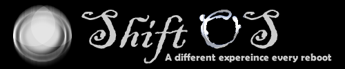

If you have anything to add, feel free to make a pull request.
ShiftOS' logo originally in 2013
ShiftOS’ Logo 2013-2016(?)
ShiftOS started back in November 2013 when Philip Adams wanting to make a game based on Arch Linux which is ShiftOS, he originally want it to be a Linux distro of Arch Linux but then he gave up on that idea due to it not being possible and he started his own VB.NET program called ShiftOS. His plans for the game at the time is when someone called DevX hijacks your computer and your hard drive is empty but you have to explore its features in ShiftOS once you buy Gray and play Pong and someone called MF (known as Maureen Fenn) he tells you a secret program called “Shiftnet” and he talks about what it is and after you receive it you get the Shiftnet which is like its own internet. The point of the game at the time is to go from a full screen terminal to a graphical interface with programs and a customizable user interface.
During this time Phil made a forum which is for the community to share skins and receive feedback. In ShiftOS 0.0.8 Beta 1 Philip steps down as developer of ShiftOS and handed development over to someone and eventually made it open source. Then Michael decided to step in to become the lead developer of ShiftOS but then things got worse during late-2014 (or early-2015?), the developers of ShiftOS were debating about changing its programming language but they changed their mind about it. Michael decided to restart ShiftOS and they called it ShiftOS-Next.
ShiftOS-Next was a ShiftOS reboot written in the same language as the original one which is VB but this time some of the storyline changed such as new characters, shifting desktop environments and creating things like APIS and applications. ShiftOS-Next got killed off and for a while there wasn’t a “ShiftOS” game, but mostly Michael renamed it to “Shifted Games” (or some other name) but that mysteriously disappeared. Michael decided to rewrite the game again but in C# this time.